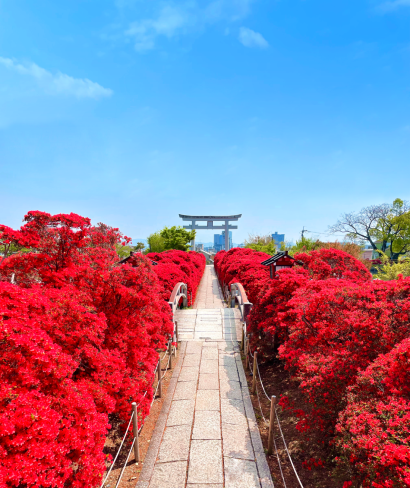
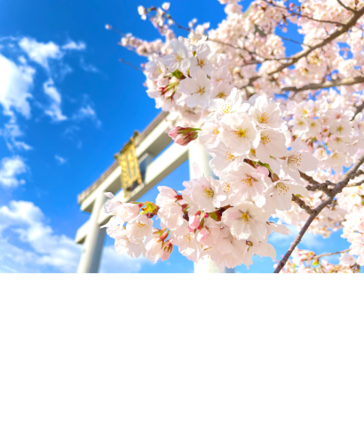
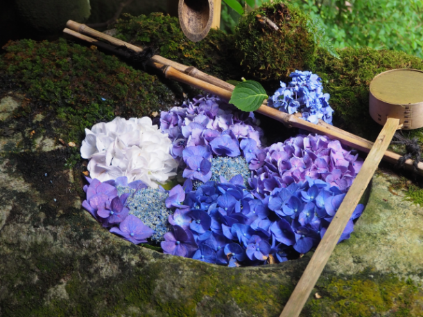
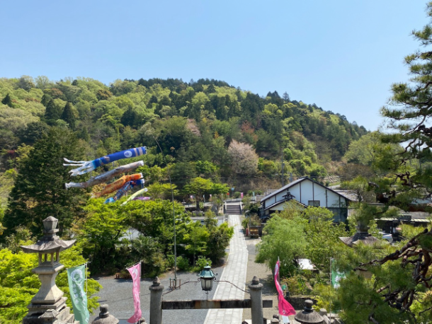
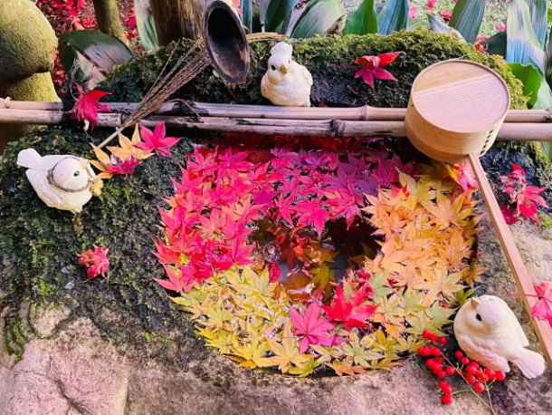

最新の情報は 公式サイトのツアーページ をご覧ください。
京都の隠れた名所ツアー ～ 長岡京の名刹＆花手水を楽しむ旅 ～
※スライド2枚目・3枚目 提供／長岡天満宮
旅行代金(お一人様/税込)
| 発着地 | 大人・子供同額 |
| 京都駅八条口MKタクシーのりば／京都駅 | 8,800円 |
| 阪急西山天王山駅 ※降車は阪急西向日駅 | 7,800円 |
※光明寺の紅葉時期の特別入山には拝観料金が必要になります。詳細は光明寺公式HPをご覧ください。
※17日縁日への参加をご希望の方はこちらをご確認ください。
| お申込み状況(最少催行人数5名) |
| 募集中 |
※最新のお申込み状況はお問い合わせください
京都の奥座敷・長岡京の寺院へお出かけ。
四季折々の自然とご利益スポットが点在する長岡京エリアをタクシーで快適に巡ります。
乗車場所は、京都駅八条口と阪急西山天王山駅の2カ所から選択可能。
（※降車は京都駅と阪急西向日駅になります）
行先は長岡天満宮・楊谷寺・光明寺・小倉山荘の4ヵ所。
歴史と花の美しい寺院を巡る特別な旅に出かけませんか？
行程
| 時間 | 場所 |
| 8:30 | 京都駅八条口MKタクシーのりば（集合・出発） |
| 9:10 | 阪急西山天王山駅（集合・出発） |
| 9:20 | 長岡天満宮 |
| 10:05 | 柳谷観音 楊谷寺到着 |
| 11:25 | 光明寺 |
| 12:00頃 | 小倉山荘 |
| 12:40頃 | 阪急西向日駅（解散） |
| 13:20頃 | 京都駅八条口MKタクシーのりば（解散） |
※拝観時はドライバーは同行いたしません。
※渋滞等で、行程の入替や、予定通りの滞在時間をお取りすることができない場合がございます。
予めご了承ください。
※柳谷観音楊谷寺では、参拝客の多い週末や祝日は入山に時間を要することがあります。
※光明寺の紅葉時期の特別入山には別途拝観料が必要になります。詳細は光明寺公式HPをご覧ください。
長岡天満宮
「天神さん」と呼ばれ親しまれている長岡天満宮。
学問の神様として知られる菅原道真公を御祭神とした歴史ある神社です。


写真提供／長岡天満宮
この投稿をInstagramで見る
MKタクシー【公式】MK TAXI Official(@mktaxi.jp)がシェアした投稿
柳谷観音 楊谷寺
新緑、紫陽花、紅葉など美しい景色を見に訪れる人も多い楊谷寺。
SNSでは季節ごとに異なる花手水が人気です。
ハートの背もたれがあるベンチで写真を撮るのもおすすめ！


-

光明寺
文化遺産に登録されている、歴史的価値の高いお寺です。
自然豊かな山間にあり、夏は青もみじ、冬は紅葉が楽しめます。

小倉山荘
老舗の煎餅・おかきの専門店でお買い物！
季節のご挨拶の品からご自宅用のお茶うけにぴったりの和菓子まで幅広く取り扱っています。
お待ち合わせ場所

【MKトラベルLINE公式アカウント】
MKトラベルの新規ツアー情報をLINEでお届けいたします

【各SNSでも京都の情報やツアー情報をお届けしています】


旅行条件
| ツアー番号 | S040 |
| 出発地 | 京都市・長岡京市 |
| 添乗員／ガイド | なし（乗務員がその業務を代行いたします）／なし |
| 食事 | なし |
| 最少催行人数 | 5名 |
お申込みについてのご注意
※最少催行人数は5名様です。最少催行人員に満たない場合は、旅行の実施を取りやめることがあります。出発の３日前にその旨をご連絡し、お客様から当社がお預かりしている旅行費用の全額をお返しいたします。
※旅行条件・旅行代金は、2025年2月1日現在を基準としています。
※行程および帰着時間は交通事情などにより変更になる場合があります。
※お申込みの前に弊社の募集型企画旅行規約をご確認ください。
※ご来店での受付は事前予約制となります（10:00～17:30／日祝定休）。
よくある質問
Q.1名ですが、申し込みできますか？
A.はい。お一人参加の方もたくさんいらっしゃいますので、お気軽にお申し込みください。
Q.知り合いだけで楽しみたいです／希望日に人が集まるか不安です
A.貸切で再現できる場合もございますのでご相談ください。お問合せフォームはこちら
また、1日1組限定、柳谷観音楊谷寺を貸し切って行うツアー、「こころうつし ―まだ言葉にならない想いに、そっと触れる―」は、1名様から催行可能です（6/12・6/13・6/21出発）。
※上記ツアーは楊谷寺以外の神社仏閣には立ち寄りいたしませんので予めご了承ください
Q.17日の縁日に参加したいのですが…
A.縁日の参加には毎月17日限定!!京都のかわいい花手水と心ときめく癒し旅 ～楊谷寺＆勝林寺巡り～をぜひご利用ください。
Q.紅葉狩りをメインに楽しみたいです
A.期間限定で早朝の紅葉を楽しむ誰もいない朝の柳谷観音 楊谷寺へ ～開門前の静寂に包まれる、京都西山の特別な朝～、ライトアップを楽しむ夜の柳谷観音 楊谷寺へ -送迎プラン-の2種類のプランをご用意しております。
＜お問合せフォームはこちら▶＞
＜MKトラベルTOPはこちら▶＞
＜おすすめツアー一覧はこちら▶＞
・クレジットカード決済
※コンビニ決済をご希望のお客様はお電話にてご予約お願いいたします
お支払方法詳細はこちら
お客様のご都合でご予約をキャンセルされる場合は、すみやかに下記お問合せ先までご連絡ください。
◆コンビニ決済をご選択の場合、支払期限を過ぎますとご予約は自動的にキャンセルとなりますのでご注意ください。
◆お客様のご都合でご予約をキャンセルされた場合、下記キャンセル料を申し受けます。お支払いいただきました旅行代金よりキャンセル料を相殺して、お客様へご返金させていただきます。
【店頭決済／銀行振込／コンビニ決済の場合】
お客様のご指定の口座へご返金させていただきます。
【クレジットカード決済の場合】
ご利用のクレジットカード会社を経由して、ご返金させていただきます。締め日のタイミングによっては一度請求が発生し、その後返金処理となります。キャンセル料
11日目に当たる日以前
無料
10日目に当たる日以降
20%
7日目に当たる日以降
30%
旅行開始日の前日
40%
旅行開始日の当日
50%
旅行開始後又は無連絡
100%